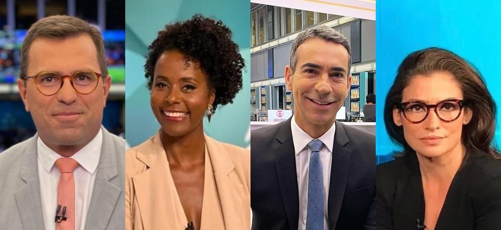

Entrevista: os bastidores da nova geração de jornalistas
Em uma conversa exclusiva, jovens repórteres e criadores de conteúdo falam sobre os desafios de produzir informação em um mundo cada vez mais rápido e digital. Eles destacam a importância da ética, da apuração e do cuidado com o público em meio ao excesso de informações nas redes.
“Hoje, informar é também educar”, afirma uma das entrevistadas, reforçando o papel social do jornalismo moderno. A nova geração busca unir tecnologia, linguagem acessível e compromisso com a verdade.